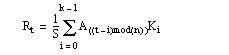

The CONVOL function convolves an array with a kernel, and returns the result. Convolution is a general process that can be used for various types of smoothing, signal processing, shifting, differentiation, edge detection, etc. The CENTER keyword controls the alignment of the kernel with the array and the ordering of the kernel elements. If CENTER is explicitly set to 0, convolution is performed in the strict mathematical sense; otherwise, the kernel is centered over each data point.
This example uses a kernel to detect diagonal lines in an image.
; Sample image
array = FIX(READ_PNG(FILEPATH('mineral.png', $
SUBDIRECTORY=['examples','data'])))
; Edge detection kernel
kernel = [ [0,1,0],[-1,0,1],[0,-1,0] ]
result = CONVOL(array, kernel)
im1 = IMAGE(array, LAYOUT=[2,1,1], RGB_TABLE=39)
im2 = IMAGE(result, LAYOUT=[2,1,2], /CURRENT)
See Additional Examples for more code examples using the CONVOL function.
Assume R = CONVOL(A, K, S), where A is an n -element vector, K is an k -element vector ( k ≤ n ), and S is the scale factor. If the CENTER keyword is omitted or set to 1:
where the value k /2 is determined by integer division . This means that the result of the division is the largest integer value less than or equal to the fractional number.
If CENTER is explicitly set to 0:
In the two-dimensional, zero CENTER case where A is an m -by- n -element array, and K is the k -by- k element kernel; the result R is an m by n -element array:
The centered case is similar, except the t-i and u-j subscripts are replaced by t+i-k /2 and u+j-k /2.
Result = CONVOL( Array , Kernel [, Scale_Factor ] [, BIAS = value ] [, / CENTER ] [, / EDGE_MIRROR ] [, / EDGE_TRUNCATE ] [, / EDGE_WRAP ] [, / EDGE_ZERO ] [, INVALID = value ] [, MISSING = value ] [, / NAN ] [, / NORMALIZE ] )
Returns the result of the array convolution. Depending on Array ’s type, the computation might be performed using a different type, although the result will always have the same type as Array . The following table shows the types used, as well as any clipping of the result values. The calculation type is also used for Kernel , Scale_Factor , and BIAS .
An array of any basic type except string. The result of CONVOL has the same type and dimensions as Array .
An array of any type except string. If the type of Kernel is not the same as Array , a copy of Kernel is made and converted to the appropriate type before use (for byte data, the kernel is converted to type LONG). The size of the kernel dimensions must be less than or equal to those of Array . CONVOL accepts non-square kernels including one-dimensional kernels.
Note: According to the mathematical definition of convolution, the kernel should be reversed before performing the computation. Since IDL does not reverse the kernel, it is actually computing the correlation rather than the convolution . For symmetric kernels this distinction is irrelevant. For asymmetric kernels, use REVERSE to change the order of the kernel argument if you want to produce the convolution.
A scale factor that is divided into each resulting value. This argument should be of the same type as the calculation type in Table , and is automatically converted if necessary. For byte or integer input arrays, the argument allows the use of fractional kernel values and avoids overflow of the result. If omitted or set to zero, a scale factor of 1 is used.
Note: The same Scale_Factor is always divided into each result value, regardless of any missing data as specified by the INVALID or NAN keywords. It is usually not appropriate to divide the result value by the full scale factor if portions of the kernel were not applied due to missing data. In this case, you might want to use the NORMALIZE keyword instead.
Set this keyword to the bias offset to be added to each result value, after any Scale_Factor has been applied. BIAS should be of the same type as the calculation type inthe previous table, and will be automatically converted if necessary. If you have negative kernel values and a byte or unsigned integer input array, you can use this keyword to ensure that the result values are within the range of your data type.
Note: The same BIAS is always added to each result value, regardless of any missing data as specified by the INVALID or NAN keywords. It is usually not appropriate to add the full BIAS if portions of the kernel were not applied due to missing data. In this case, you might want to use the NORMALIZE keyword instead.
Set or omit this keyword to center the kernel over each array point. If CENTER is explicitly set to zero, the CONVOL function works in the conventional mathematical sense. In many signal and image processing applications, it is useful to center a symmetric kernel over the data, thereby aligning the result with the original array.
Note that for the kernel to be centered, it must be symmetric about the point K(FLOOR( m /2)), where m is the number of elements in the kernel.
Set this keyword to make CONVOL compute the values of elements at the edge of Array by “mirroring” the subscripts of Array at the edge. For example, if CENTER= 0:
If none of the EDGE_* keywords are set, CONVOL sets the values of Result to zero (or the value of BIAS) where the kernel extends beyond the edge.
Set this keyword to make CONVOL compute the values of elements at the edge of Array by repeating the subscripts of Array at the edge. For example, if CENTER is set to zero:
where n is the number of elements in Array . The “<” and “>” operators in the above formula return the smaller and larger of their operands, respectively.
If none of the EDGE_* keywords are set, CONVOL sets the values of Result to zero (or the value of BIAS ) where the kernel extends beyond the edge.
Set this keyword to make CONVOL compute the values of elements at the edge of Array by “wrapping” the subscripts of Array at the edge. For example, if CENTER is set to zero:

where n is the number of elements in Array . The mod operator in the formula above is defined as a mod b = a - b * floor(a/b) . For example, -1 mod 5 is 4.
If none of the EDGE_* keywords are set, CONVOL sets the values of Result to zero (or the value of BIAS ) where the kernel extends beyond the edge.
Set this keyword to make CONVOL compute the values of elements at the edge of Array as if the array were padded with zeroes. For example, if CENTER is set to zero:
If none of the EDGE_* keywords are set, CONVOL sets the values of Result to zero (or the value of BIAS ) where the kernel extends beyond the edge.
Set this keyword to a scalar value of the same type as Array that should be used to indicate missing or invalid data within Array . Missing data are ignored when computing the convolution for neighboring elements. In Result , missing elements are replaced by the convolution of all other valid points within the kernel. If all points within the kernel are missing, the result at that point is given by the value of the MISSING keyword.
Tip: The INVALID keyword has the same effect as the NAN keyword, but is useful for byte or integer data which have missing values.
Note: The INVALID keyword uses a simple comparison to ignore values and should not be set to NaN. For floating-point data, you can use the INVALID and NAN keywords simultaneously to filter out both user-defined values and NaN or Infinity values.
Set this keyword to the numeric value to return for elements that contain no valid points within the kernel. The default is zero for byte or integer input, and NaN for floating-point input. This keyword is only used if the INVALID or NAN keyword is set.
Set this keyword to cause the routine to check for occurrences of the IEEE floating-point values NaN or Infinity in the input data. Elements with the value NaN or Infinity are treated as missing data. Missing data are ignored when computing the convolution for neighboring elements. In the Result , missing elements are replaced by the convolution of all other valid points within the kernel. If all points within the kernel are missing, then the result at that point is given by the MISSING keyword.
Note: CONVOL should never be called without the NAN keyword if the input array may possibly contain NaN or Infinity values.
Set this keyword to automatically compute a scale factor and bias and apply them to the result values. If this keyword is set, the Scale_Factor argument and the BIAS keyword are ignored. For all input types, the scale factor is defined as the sum of the absolute values of Kernel . For BYTE or UINT, the bias is defined as the sum of the absolute values of the negative Kernel values, multiplied by either (255/ Scale ) for BYTE or (65535/ Scale ) for UINT, where Scale is the computed scale factor. For all other types, the bias is zero.
Tip: If NORMALIZE is set and your input array has missing data (the INVALID or NAN keywords are set), for each result value the scale factor and bias are computed using only those kernel values that contributed to that result value. This ensures that all result values are comparable in magnitude, regardless of any missing data.
This routine is written to make use of IDL’s thread pool , which can increase execution speed on systems with multiple CPUs. The values stored in the !CPU system variable control whether IDL uses the thread pool for a given computation. In addition, you can use the thread pool keywords TPOOL_MAX_ELTS, TPOOL_MIN_ELTS, and TPOOL_NOTHREAD to override the defaults established by !CPU for a single invocation of this routine. See Thread Pool Keywords for details.
This example smoothes a noisy image that has missing data and uses the NORMALIZE keyword to automatically remove much of the missing data.
; Array with noise
array = HANNING(300,300) + 0.1*RANDOMN(seed,300,300)
; Convert to bytes from [0, 254]
array = BYTSCL(array, TOP=254)
; Add some missing scanlines, plus a large region
; Use 255 as the missimg data value
array[*, RANDOMU(seed,40)*300] = 255
array[*, 10:20] = 255
; Simple 5x5 Gaussian kernel
kernel = GAUSSIAN_FUNCTION([1,1], WIDTH=5, MAXIMUM=255)
; Values of 255 are flagged as invalid (missing)
; and replaced by 0 if there are no valid values
; within the kernel
result = CONVOL(array, kernel, INVALID=255, MISSING=0, $
/EDGE_ZERO, /NORMALIZE)
i2 = IMAGE(array, LAYOUT = [2, 1, 1], RGB_TABLE=39)
i2 = IMAGE(result, LAYOUT = [2, 1, 2], RGB_TABLE=39, /CURRENT)
|
Original |
Introduced |
|
6.2 |
Added BIAS, EDGE_ZERO, INVALID, and NORMALIZE keywords |
|
8.1 |
Added EDGE_MIRROR keyword |